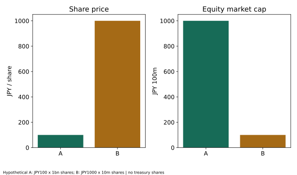
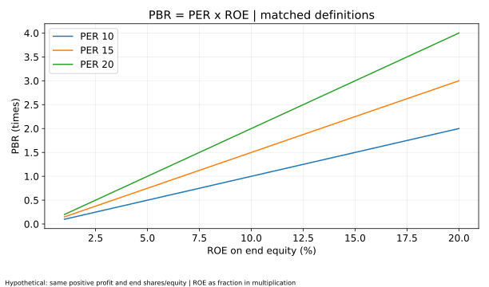
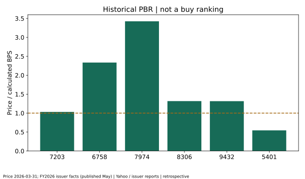
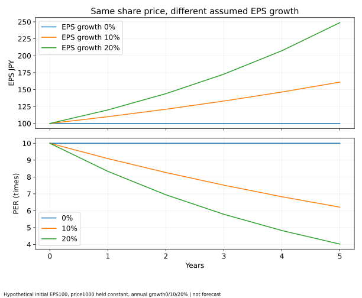
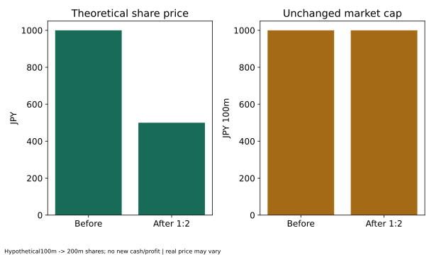

時価総額・PER・PBRとは？株価の割安・割高を見極める基本指標を初心者向けに徹底解説
公開日・更新日・調査日：2026年11月7日｜執筆・編集：トピック基地編集部
株価が安いことと、割安な投資先であることは別です。時価総額・PER・PBR・ROEを、分母と時点から読み解きます。架空の計算例と実在6社の事後比較を分け、数字だけで買い時を断定しない分析の基本を整理します。
株価と企業価値：100円の株は1000円より割安か
株価は1株に付く市場の価格です。100円という見た目の安さだけでは、1000円の株より割安とはいえません。株式数、利益、資産、将来の収益やリスクが違うからです。企業をいくつの株に分けているかによって、1株の価格も変わります。
時価総額は株主に帰属する市場評価の規模を表す指標の一つです。一方、負債も含めた事業価値、将来のキャッシュフローから評価する価値、会社全体を取得するための価格と同一ではありません。時価総額が小さいことも、そのまま割安の証明にはなりません。
このページでは、まず架空の例で計算を確かめ、その後に日本の実在6社の公表データを使います。数値の高低を購入推奨や将来株価の予想に結び付けず、分母と対象期間を読むための教材として比較してください。
時価総額の計算：自己株式を含むかを先に決める
時価総額＝株価×対象となる株式数です。本稿の実在企業比較では、対象株式数を「期末発行済普通株式総数−短信に記載された期末自己株式数」に統一します。自己株式や信託保有株の扱いは各社の短信の定義に従います。
これは本稿で統一した計算基準です。発行済総数を使うサービスや浮動株を使う指標とは定義が異なるため、同じ名称でも数値が違うことがあります。分母を確認せず別サービスと一致するよう補正しません。
表は左右にスクロールできます。
| 企業 | 株価（円） | 株式数（株） | 時価総額（円） |
|---|---|---|---|
| A社 | 100 | 1,000,000,000 | 100,000,000,000 |
| B社 | 1,000 | 10,000,000 | 10,000,000,000 |

A社の株価はB社の10分の1でも、時価総額は10倍です。ただし、これだけではどちらが割安かは判断できません。株式数をそろえず、株価の水準だけを比べる誤解を防ぐ例です。
EPSとPER：利益に対して株価は何倍か
EPSは1株当たり利益です。決算短信の基本的EPSは、原則として普通株主に帰属する利益を、対象期間の加重平均株式数で割ります。期末の株式数や期首・期末の単純平均と必ずしも同じではありません。希薄化後EPSは潜在株式も考慮する別の値です。
PER＝株価÷EPS。株価1000円、EPS100円なら10倍です。これは利益が永遠に一定という前提で投資額の回収を保証する「10年」という意味ではありません。配当として利益がすべて支払われるわけでもなく、株価も利益も変動します。
表は左右にスクロールできます。
| EPS（円） | PER |
|---|---|
| 100 | 10.00倍 |
| 50 | 20.00倍 |
| 20 | 50.00倍 |
| 0 | 算定対象外 |
| -50 | 算定対象外 |
実績PERと予想PERを分ける
実績PERは既に確定した期間の利益に対する倍率、予想PERは将来の予想EPSに対する倍率です。会社予想、アナリスト予想、過去12か月（TTM）など、同じ名称でも期間や提供元が違います。予想利益は達成される保証がなく、引下げや撤回で評価が変わります。
EPSがゼロでは割り算できず、赤字の負のPERを「非常に割安」と解釈するのも適切ではありません。本稿はEPSが0以下の場合、PERを算定対象外（JSONではnull）とします。赤字のEPSそのものは隠さず負数で表示します。
時価総額÷純利益がPERになる条件
同じ株式数・同じ利益を使うなら、「株価÷（純利益÷株式数）」と「時価総額÷純利益」は一致します。しかし、本稿の時価総額は期末自己株控除後、基本的EPSは期中平均株式数なので、そのまま2つの式が一致するとは限りません。株式数を統一した参考値は後半で分けて示します。
BPSとPBR：帳簿の自己資本に対して何倍か
BPSは1株当たり純資産と呼ばれますが、連結の純資産合計を何でもそのまま割るわけではありません。日本基準では通常、新株予約権や非支配株主持分等を除いた普通株主に対応する自己資本を確認します。IFRSでは親会社所有者に帰属する持分等の定義を読み、同じグループでも他の株主に帰属する部分を混ぜないことが重要です。
BPS＝対応する自己資本÷期末自己株控除後の普通株式数、PBR＝株価÷BPSです。株価1000円、BPS2000円なら0.5倍となります。
表は左右にスクロールできます。
| BPS（円） | PBR |
|---|---|
| 500 | 2.00倍 |
| 1000 | 1.00倍 |
| 2000 | 0.50倍 |
| 0 | 算定対象外 |
| -500 | 算定対象外 |
自己資本やBPSが0以下の場合、通常の意味でのPBR評価は適しません。本稿はその場合PBRを算定対象外とし、負のBPS自体は表示できます。低PBRを探す表に負数を並べて「最も割安」とする扱いはしません。
PBR1倍割れは現金化の利益を保証しない
帳簿の資産価額と実際の売却可能額は違います。資産を処分する費用、負債、事業の継続に必要な資産などもあります。のれん・ブランド・研究開発などの会計上の扱いも企業で異なり、PBRだけから清算時の受取金額や事業の本当の価値を確定できません。
収益性が低い、将来損失が見込まれる、資産の回収に不安があるといった理由で1倍を下回る場合もあります。東証の資本コストや株価を意識した経営の要請は、資本収益性や市場評価の分析、計画・対話を求めるもので、1倍未満の銘柄の利益を保証するものではありません。2026年10月27日の最新の取組み説明も確認しました。
ROEとPBRの関係：定義をそろえたときだけ式を使う
ROEは対応する自己資本に対して、どれだけ親会社の普通株主に帰属する利益を得たかを示します。本稿の比較用ROEは通期親会社帰属利益÷（期首・期末の自己資本の平均）です。表示では100を掛けて%にします。平均自己資本が0以下なら算定対象外とし、債務超過をまたぐ期間なども通常の評価には注意が必要です。
期末自己資本だけを分母にするROEとは異なります。大きな自社株買い、資本異動、企業再編がある場合は差が出ます。会社が公表するROEが継続事業だけを使うなど、利益の範囲が違う場合もあるため、ここで計算したROEを会社公表値の転載とはしていません。
PBR＝PER×ROEという関係は、同じ利益・同じ株式数・同じ自己資本の定義にそろえた場合に成り立ちます。例えば期末株式数でEPSを計算し、ROEも「同じ利益÷期末自己資本」とすれば、（株価÷EPS）×（利益÷自己資本）＝株価÷BPSです。ROE10%は0.10として掛けます。
株価1000円、利益100億円、期末自己株控除後1億株、自己資本1000億円ならEPS100円、PER10倍、BPS1000円、ROE10%、PBR1倍です。予想PERと実績ROE、加重平均株数EPSと期末BPSを混ぜて、必ず一致すると説明しません。

4指標の違いを整理する
| 指標 | 問い | 本稿の分母・計算 | 単独判断の落とし穴 |
|---|---|---|---|
| 時価総額 | 株式市場での規模は？ | 株価×期末自己株控除後株数 | 小さい会社が割安とは限らない |
| PER | 年の利益に対して株価は何倍？ | 基本的EPSは通期利益÷期中平均株数 | 一時利益、景気の山、赤字、予想の変更 |
| PBR | 帳簿の自己資本に対して何倍？ | 自己資本÷期末自己株控除後株数 | 資産の換金価値や将来収益は別 |
| ROE | 自己資本に対して利益を得たか？ | 本比較は通期利益÷期首期末平均自己資本 | 借入・自社株買い・期間の異動・利益範囲 |
比較の前に、連結と単体、親会社帰属とグループ全体、普通株と潜在株式、株式分割調整の有無をそろえます。名前が同じ指標でも、サービス間の値が違うことはあります。JPXのPER用語説明、PBR用語説明も参照し、会社の開示と算出条件を確認してください。
実在6社：比較日・年度・取得元を固定する
選んだ企業は、トヨタ自動車、ソニーグループ、任天堂、三菱UFJフィナンシャル・グループ、NTT、日本製鉄です。輸送用機器、電気機器、ゲーム関連のその他製品、銀行、通信、鉄鋼という異なる事業を持つ例であり、推奨銘柄リストや市場全体の代表標本ではありません。
- 株価はYahoo Financeの各証券コード.Tの日次API、quote.closeを取得。配当調整後終値adjcloseは使いません。取引日のラベルは東証の2026年3月31日で、取得時刻はUTCで記録。
- APIの二進浮動小数点由来の微小な端数は、円の小数第2位に正規化しています。株価水準の推定や欠損補間はしていません。
- 取得原本にある参照日より後の株式分割があれば、そのまま計算せず検証を停止します。今回そのようなイベントはなく、日本製鉄の2025年の分割は3月末株価・短信の株数に既に反映されています。
- 利益は非支配株主への帰属分を含まない連結親会社帰属の全体利益、自己資本は対応する親会社持分等です。日本基準・IFRSの会計上の差は残ります。
- 基本的EPSは公表通期利益÷公表期中平均株式数、BPSは公表期末自己資本÷期末自己株控除後株数で独自再計算。元の財務金額は百万円単位です。
- 公表EPS・BPSとは表示端数等の小差があり得ます。6社すべて差は1銭未満でした。日本製鉄の計算BPS1058.1969円と公表1058.19円の端数処理の厳密な一致までは未確認で、本表は計算BPSを使います。
最新のIR一覧で、その後の四半期・中間期資料も確認しました。ただし6社の通期比較として年度を固定しており、最新の中間期利益を年率換算して加えません。3月末時点と同じ情報時点の予想EPSを独立確認していないため、予想PERは掲載しません。会社が将来予想を公表していない、という意味ではありません。
6社の時価総額・PER・PBR・ROEを再計算
表は左右にスクロールできます。
| 企業・コード | 業種 | 3月末終値 | 自己株控除時価総額 | 実績PER | PBR | 通期/平均自己資本ROE | 予想PER |
|---|---|---|---|---|---|---|---|
| トヨタ自動車 7203 | 輸送用機器 | 3,162.00円 | 412,115.62億円 | 10.71倍 | 1.03倍 | 10.15% | 未掲載 |
| ソニーグループ 6758 | 電気機器 | 3,209.00円 | 189,577.04億円 | 算定対象外 | 2.33倍 | -4.01% | 未掲載 |
| 任天堂 7974 | その他製品 | 8,775.00円 | 101,160.72億円 | 24.07倍 | 3.42倍 | 14.94% | 未掲載 |
| 三菱UFJ FG 8306 | 銀行業 | 2,600.00円 | 293,477.75億円 | 12.20倍 | 1.32倍 | 11.34% | 未掲載 |
| NTT 9432 | 情報・通信業 | 157.20円 | 127,997.94億円 | 12.47倍 | 1.32倍 | 10.40% | 未掲載 |
| 日本製鉄 5401 | 鉄鋼 | 575.90円 | 30,098.23億円 | 175.42倍 | 0.54倍 | 0.31% | 未掲載 |
表は左右にスクロールできます。
| 企業 | 純利益 | 期首自己資本 | 期末自己資本 | 計算EPS・平均株数 | 計算BPS・期末株数 | 短信公表日 |
|---|---|---|---|---|---|---|
| トヨタ自動車 | 3,848,098百万円 | 35,924,826百万円 | 39,918,854百万円 | 295.25円 | 3,062.82円 | 2026-05-08 |
| ソニーグループ | -326,865百万円 | 8,179,745百万円 | 8,119,011百万円 | -54.70円 | 1,374.32円 | 2026-05-08 |
| 任天堂 | 424,056百万円 | 2,724,327百万円 | 2,954,024百万円 | 364.51円 | 2,562.41円 | 2026-05-08 |
| 三菱UFJ FG | 2,427,229百万円 | 20,520,374百万円 | 22,273,941百万円 | 213.17円 | 1,973.31円 | 2026-05-15 |
| NTT | 1,037,032百万円 | 10,221,587百万円 | 9,727,623百万円 | 12.61円 | 119.47円 | 2026-05-08 |
| 日本製鉄 | 17,158百万円 | 5,383,311百万円 | 5,530,448百万円 | 3.28円 | 1,058.20円 | 2026-05-13 |
表は左右にスクロールできます。
| 企業 | 発行済総数 | 控除する自己株 | 期末控除後 | 期中平均 |
|---|---|---|---|---|
| トヨタ自動車 | 15,794,987,460株 | 2,761,602,986株 | 13,033,384,474株 | 13,033,273,748株 |
| ソニーグループ | 6,149,810,645株 | 242,143,391株 | 5,907,667,254株 | 5,975,983,562株 |
| 任天堂 | 1,287,260,000株 | 134,431,295株 | 1,152,828,705株 | 1,163,347,433株 |
| 三菱UFJ FG | 11,867,710,920株 | 580,104,991株 | 11,287,605,929株 | 11,386,394,907株 |
| NTT | 90,550,316,400株 | 9,126,691,363株 | 81,423,625,037株 | 82,258,269,145株 |
| 日本製鉄 | 5,373,633,760株 | 147,339,771株 | 5,226,293,989株 | 5,226,245,904株 |

ソニー：利益の範囲で符号まで変わる
同社短信の継続事業の親会社帰属利益は1,030,893百万円、基本的EPSは172.51円ですが、非継続事業を含む全体は親会社帰属損失326,865百万円、EPSは−54.70円です。本稿は全体の損益を使うためPERを算定対象外とし、全体損益と平均自己資本からのROEは約−4.01%となります。継続事業で算定された会社公表ROE12.6%と同一扱いしません。
短信は、金融事業のスピンオフに伴う累積その他包括利益の振替による損失を説明し、当該処理自体は資本合計やキャッシュフローに影響しないとしています。赤字という言葉だけで営業上の資金不足と決めつけず、継続事業・非継続事業・会計処理を読み分ける必要があります。一時要因だから無条件で安心という判断でもありません。ソニー公式短信・冒頭注記。
日本製鉄：低PBRでも利益基準の倍率は低いとは限らない
この基準日のPBRは約0.54倍ですが、通期親会社帰属利益17,158百万円を使うPERは約175.42倍です。「事業利益」514,128百万円をEPSの分子に勝手に置き換えてはいけません。景気や特別要因などで最終利益が小さくなると、株価が変わらなくてもPERは高くなります。日本製鉄公式短信。
各社資料：トヨタ、ソニー、任天堂、MUFG、NTT、日本製鉄。全入力、出典ハッシュ、財務事実照合、独立検算コードを公開しています。
期末基準に統一した参考値：恒等式の確認用
表は左右にスクロールできます。
| 企業 | 期末株数EPS | 期末株数PER | 期末資本ROE | PBR |
|---|---|---|---|---|
| トヨタ自動車 | 295.25円 | 10.71倍 | 9.64% | 1.03倍 |
| ソニーグループ | -55.33円 | 算定対象外 | -4.03% | 2.33倍 |
| 任天堂 | 367.84円 | 23.86倍 | 14.36% | 3.42倍 |
| 三菱UFJ FG | 215.03円 | 12.09倍 | 10.90% | 1.32倍 |
| NTT | 12.74円 | 12.34倍 | 10.66% | 1.32倍 |
| 日本製鉄 | 3.28円 | 175.42倍 | 0.31% | 0.54倍 |
この表だけは、EPSも通期利益÷期末自己株控除後株数、ROEも通期利益÷期末自己資本へ統一しています。通常の基本的EPSや前の表の平均自己資本ROEとは異なる参考値です。利益と自己資本が正の場合、未丸めの数値でPBR＝期末株数PER×期末資本ROEを検証できます。
表示済みの小数第2位同士の掛け算には丸め差が出ます。ソニーのように赤字なら、PERを通常評価に使わないという例外を優先します。予想値を混ぜたり、実際のEPSを一致するよう改変したりしていません。
利益半減と利益成長：同じ株価でもPERは変わる
架空の株価1000円、EPS100円ならPER10倍です。利益が半減しEPS50円、株価一定なら20倍へ上がります。「低PERだったから割安」と思っても、翌期利益が崩れると倍率の印象は変わります。
反対に、EPSが成長すれば、同じ株価の下で将来の利益に対する倍率は下がります。図は初期EPS100円に年0・10・20%の成長率を置いた仮定です。これは実在企業の予想ではなく、価格が反応せず固定されるという現実には厳しい仮定も含みます。

高PERでも高成長を期待される企業があり、低PERでも減益や不確実性を織り込む企業があります。同じPERでも利益の安定性、財務、成長投資、事業の継続性が違います。将来成長が期待外れになれば、利益と評価倍率が両方下がるリスクもあります。
株式分割・増資・自社株買いの計算例
表は左右にスクロールできます。
| 状態 | 株価 | 自己株控除後株数 | 時価総額 | EPS | BPS | PER | 期末資本ROE |
|---|---|---|---|---|---|---|---|
| 基準 | 1,000.00円 | 100,000,000株 | 1,000.00億円 | 100.00円 | 1,000.00円 | 10.00倍 | 10.00% |
| 1対2分割 | 500.00円 | 200,000,000株 | 1,000.00億円 | 50.00円 | 500.00円 | 10.00倍 | 10.00% |
| 2000万株増資 | 1,000.00円 | 120,000,000株 | 1,200.00億円 | 83.33円 | 1,000.00円 | 12.00倍 | 8.33% |
| 2000万株自己取得 | 1,000.00円 | 80,000,000株 | 800.00億円 | 125.00円 | 1,000.00円 | 8.00倍 | 12.50% |
1株を2株に分割する場合
基準の1億株を2億株に分け、理論株価を1000円から500円にすると、時価総額は1000億円で変わりません。利益と自己資本が変わらなければEPS・BPSも半分で、PER・PBRも変わりません。実際の市場株価は需給等で動くため、分割しただけで資産価値が倍増する保証はありません。

新株発行による持分とEPSの変化
基準に2000万株を1000円で発行すると、会社へ200億円の現金が入り、自己資本は1000億円から1200億円へ増えると仮定します。利益を100億円のまま、株価も1000円固定とすれば、株式数は1.2億株、EPSは約83.33円、PERは12倍です。
100万株を保有する既存株主は、買い増さなければ持分が1%から約0.8333%へ下がります。一方、会社には現金が増え、今回の発行価格は元のBPSと同じなのでBPSは1000円のままです。比率の希薄化と経済価値の変化を同じものとせず、調達資金が将来生む収益や発行条件も確認します。将来の利益増加・市場価格の変化はこの例に含みません。
自己株取得でEPS・ROEが上がる場合
基準から2000万株を1000円で自己取得すると、自己株控除後は8000万株となり、現金と自己資本は200億円減ると仮定します。同じ利益ならEPS125円、期末資本ROE12.5%へ上がりますが、それだけで事業の収益力が向上したわけではありません。実際には取得時期による平均株数、資金運用益や借入利息、取得価格、将来投資への影響もあります。
業種・景気・会計・金利：指標だけの判断を避ける
業種と収益構造が異なる
銀行と製造業では、負債、預金、借入、資産、キャッシュフローの意味が違います。自己資本比率や営業キャッシュフローの大小を同じ物差しで順位付けしないでください。銀行の規制資本比率も会計上の自己資本比率と別です。資産の軽い事業と設備投資の重い事業のPBRも、同じ数字で結論付けられません。
利益の質と一時要因を確認
特別利益や資産売却益で純利益が一時的に増えればPERが低く見えます。景気敏感企業では好況期の利益を基準にした低PERが、その後も続くとは限りません。赤字なら売上・営業損益・現金収支・財務余力・資金調達の必要性などへ視野を広げますが、売上倍率など別指標も単独の安全保証にはなりません。
債務超過や資金繰り不安がある企業では、継続企業の前提や借入契約、増資による希薄化、上場維持等のリスクを一次資料で確認します。負のPERやPBRを買い場の数値として扱わないことが重要です。
金利・景気と市場の期待が変わる
金利は資金調達負担や将来キャッシュフローの評価に関係し、景気は利益見通しに影響します。ただし「金利が上がればすべての企業のPERが必ず下がる」とは限りません。金融業の利ざや、為替、成長期待、リスク認識などが同時に動きます。将来利益を断定せず、複数のシナリオで考えましょう。
新NISAで個別株を選ぶ際の注意
2026年の成人向けNISAで一般的な国内上場個別株へ投資する場合は、つみたて投資枠ではなく成長投資枠で対象条件を確認します。成長投資枠は年240万円、非課税保有限度額はうち1200万円（全体1800万円）です。個々の銘柄の最新の対象・取扱いは金融機関等で確認し、本稿の6社を一律に購入推奨するものではありません。金融庁NISA制度。
NISAの非課税は値下がりを防ぐ仕組みではありません。NISAの損失は課税口座の利益と損益通算できず、損失繰越もできません。国内上場株式等の配当を非課税にする受取方式、売却後の枠の再利用時期なども確認します。日本証券業協会NISA Q&A。
生活に必要な資金を分け、単一企業や同業種への集中を避けられるか検討してください。購入単位・売買手数料・資金を使う時期も大切です。NISAの仕組みは第5号、幅広い指数への分散は第6号で説明しています。
初心者向け企業分析チェックリスト
項目は情報を整理するためのメモです。チェックの数から安全性・将来利益を判定しません。
- 何で利益を得ているか：事業・顧客・地域・競争力を決算説明資料で確認する
- 売上高は増えているか：連結範囲の変化や為替、単体と連結を区別して比べる
- 営業利益は増えているか：売上だけでなく利益率と一時要因も確認する
- 最終利益は安定しているか：特別損益、非継続事業、税効果を注記で読む
- PERは同業と比べてどうか：同じ期間・実績か予想か・EPSの定義をそろえる
- PBRは同業と比べてどうか：資産構成、親会社持分、減損リスクを確認する
- ROEはどうか：利益範囲、平均/期末資本、借入や自己取得の影響を確認する
- 自己資本比率はどうか：業種の違いと金融業の規制指標を区別する
- 営業キャッシュフローはどうか：利益との違いを読み、金融業と製造業を単純比較しない
- 借入金負担は大きくないか：金利、返済時期、手元資金を併せて見る
- 配当・自社株買いの方針はどうか：実行余力、継続性、将来投資とのバランスを確認する
- 株価上昇への期待だけになっていないか：損失に耐えられる範囲と分散、投資目的を再確認する
よくある質問
- PERは何倍なら買いですか？
- 共通の買い基準はありません。業種、成長、利益の安定性、会計・期間、財務リスクを確認します。
- PBRが1倍未満なら解散すれば儲かりますか？
- 帳簿価額と実際の処分価額・費用は違うため、利益は保証されません。将来の損失や資産の質も確認します。
- 株価100円は1000円より割安ですか？
- 株式数や利益・資産が違うので、それだけでは判断できません。時価総額が小さいだけでも割安とは限りません。
- 赤字のPERがマイナスなら低PERですか？
- 通常の利益倍率の比較には使いません。本記事は算定対象外として、EPSの赤字自体は明示します。
- PER×ROEはいつもPBRになりますか？
- 同じ利益・株式数・資本基準にそろえたときの関係です。予想と実績、期中平均と期末を混ぜないでください。
- 自社株買いでROEが上がれば事業も改善していますか？
- 分母が減った効果もあります。借入負担、現金、将来投資への影響を含めて判断します。
- 表は今の割安株ランキングですか？
- いいえ。3月末株価と同月終了年度を後から組み合わせた学習用比較です。最新株価や当時利用可能だった情報だけの指標ではありません。
- 予想PERがない会社は予想を出していないのですか？
- この表では3月末と同じ情報時点の予想EPSを確認していないため省略しています。現在の会社予想の有無とは別です。
まとめ：倍率を読む前に分母と時点を確認する
時価総額は株式市場での規模、PERは利益、PBRは帳簿の自己資本との関係を読む指標です。ROEと組み合わせると収益性への理解が進みますが、定義と期間をそろえる必要があります。
今回の6社には、利益範囲の違いでPERの意味が変わる例や、低PBRでも利益倍率が高くなる例がありました。数値の大小を買い時に直結させず、何が分子・分母を変えたかを一次資料で確認しましょう。
資産の性格の違いは第4号、配当と総収益は第10号、個別株と異なる器としてのETF・投信は第11号も参考になります。
本記事は一般的な情報提供で、特定企業の購入推奨、将来価格の予測、個別投資・税務助言ではありません。執筆・編集はトピック基地編集部。架空の資格・監修を称せず、編集・訂正方針とお問い合わせを掲載しています。
参考資料・計算方法・再現コード
調査日2026年11月7日。引用資料の対象期間と公表日を取得日と区別し、実績と仮定例を分けています。
- トヨタ公式・2026年3月期までのアーカイブ
取得：2026-11-07T04:02:01.853703+00:00（UTC） - ソニー2026年3月期短信・2026-05-08
取得：2026-11-07T04:02:02.827924+00:00（UTC） - 任天堂2026年3月期短信・2026-05-08
取得：2026-11-07T04:02:01.898655+00:00（UTC） - MUFG公式・2025年度資料
取得：2026-11-07T04:02:02.201818+00:00（UTC） - NTT公式・最新決算一覧
取得：2026-11-07T04:02:03.860698+00:00（UTC） - 日本製鉄2026年3月期短信・2026-05-13
取得：2026-11-07T04:02:03.706143+00:00（UTC） - トヨタ2026年3月期短信・2026-05-08
取得：2026-11-07T04:02:34.855896+00:00（UTC） - MUFG2026年3月期短信・2026-05-15
取得：2026-11-07T04:02:33.796707+00:00（UTC） - NTT2025年度（2026年3月期）短信・2026-05-08
取得：2026-11-07T04:02:34.519236+00:00（UTC） - 金融庁・NISA制度
取得：2026-11-07T04:02:33.431450+00:00（UTC） - 日本証券業協会・NISA Q&A、2026年9月
取得：2026-11-07T04:02:34.901363+00:00（UTC） - Yahoo Finance・7203.T日次株価/株式分割イベント（採用日2026-03-31）
取得：2026-11-07T04:02:33.585574+00:00（UTC） - Yahoo Finance・6758.T日次株価/株式分割イベント（採用日2026-03-31）
取得：2026-11-07T04:02:33.731066+00:00（UTC） - Yahoo Finance・7974.T日次株価/株式分割イベント（採用日2026-03-31）
取得：2026-11-07T04:02:34.018294+00:00（UTC） - Yahoo Finance・8306.T日次株価/株式分割イベント（採用日2026-03-31）
取得：2026-11-07T04:02:34.063492+00:00（UTC） - Yahoo Finance・9432.T日次株価/株式分割イベント（採用日2026-03-31）
取得：2026-11-07T04:02:33.997838+00:00（UTC） - Yahoo Finance・5401.T日次株価/株式分割イベント（採用日2026-03-31）
取得：2026-11-07T04:02:34.268574+00:00（UTC） - JPX・資本コストや株価を意識した経営
取得：2026-11-07T04:03:27.357657+00:00（UTC） - JPX・同取組みの現状と今後、2026-10-27
取得：2026-11-07T04:03:27.404502+00:00（UTC） - ソニー公式・決算一覧
取得：2026-11-07T04:03:27.357824+00:00（UTC） - 任天堂公式・決算一覧
取得：2026-11-07T04:03:27.538459+00:00（UTC） - 日本製鉄公式・最新決算一覧
取得：2026-11-07T04:03:28.154205+00:00（UTC） - トヨタ公式・最新決算一覧
取得：2026-11-07T04:07:54.131586+00:00（UTC） - MUFG公式・2026年度最新資料
取得：2026-11-07T04:07:54.023477+00:00（UTC） - JPX公式用語集・PER
取得：2026-11-07T04:18:12.331496+00:00（UTC） - JPX公式用語集・PBR
取得：2026-11-07T04:18:12.365081+00:00（UTC）